Exercise 5: Deploy CP4BA¶
5.1 Introduction¶
You have now completed all prerequisites for the CP4BA deployment: LDAP is installed on the bastion host, DB2 is deployed on the OpenShift cluster, and the needed databases are created. Also, the CP4BA Operators are deployed.
You are now ready to get started with the deployment of the CP4BA Cluster!
The first step is to verify LDAP is running correctly.
Then you have to provide some more CP4BA-specific configuration parameters and then you can kick off the CP4BA deployment using the CP4BA Operator.
Finally, there are some post-deployment and verification steps to verify that the deployment is healthy and that all deployed components are accessible.
5.2 Exercise Instructions¶
5.2.1 Deploy CP4BA¶
Follow these step-by-step instructions to deploy CP4BA using the rapid deployment scripts:
-
Connect to your bastion host as documented in Exercise 1: Prepare yourself for this Bring-Up Lab. Login as the cp4badmin user, if needed, the password is passw0rd (where the third-last character is a zero).
-
Open a Terminal, by clicking the link on the desktop. Then, check that the Security Directory Server is running fine.
systemctl status sds
Expected output:
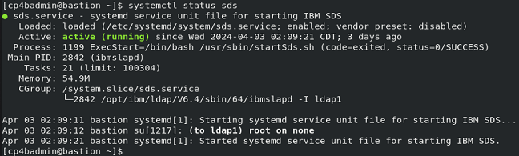
If you don't see Active: active (running) use these commands to stop and start SDS:
sudo systemctl stop sds
sudo systemctl start sds
- Run this command to verify you are still connected with OCP.
oc version
Note: If you are not connected to OCP, follow the instructions in Exercise 1: Prepare yourself for this Bring-Up Lab to reconnect.
- Switch to the directory where you previously downloaded the rapid deployment scripts into.
cd /home/cp4badmin/Desktop/Labfiles/cp4ba-rapid-deployment/cp4ba-23-0-2/mycluster/deployment-db2-cp4ba
- Open rapid deployment script 05-parametersForCp4ba.sh, with gedit.
gedit 05-parametersForCp4ba.sh
-
Apply the following changes:
-
cp4baProjectName – Name of the project/namespace to use to deploy CP4BA, for example, ibm-cp4ba – make sure to use the same value as used before when running script
cp4a-clusteradmin-setup.shset the value to ibm-cp4ba
-
cp4baTlsSecretName – Parameter for ROKS deployments on IBM Cloud only – as you are not deploying on ROKS, leave empty
remove the default value REQUIRED, and leave this parameter empty
-
cp4baAdminPassword – Use the password for user cp4badmin (this user was for you created in the LDAP server).
set the value to passw0rd (where the third-last character is a zero)
-
ldapAdminPassword – Use the password that was specified for cn=root when setting up LDAP
set the value to passw0rd123 (where the sixth character is a zero)
-
ldapServer – The hostname or IP of the LDAP server
set the value to "10.100.1.8"
-
The changes you made so far should look as shown below.
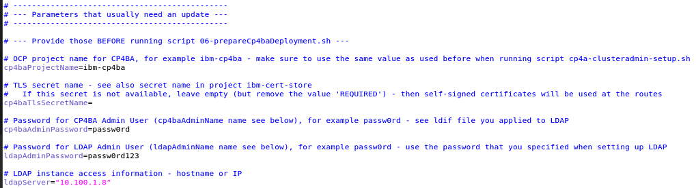
-
Leave all other properties at their default values
The storage class nfs-client available on your OpenShift cluster from TechZone is already referenced under properties named cp4baScXXX and cp4baBlockScFast as default value.
-
Save your changes and close the editor
-
Run script 07-createCp4baDeployment.sh. This script will now deploy CP4BA using the parameters you previously provided in 01-parametersForDb2OnOCP.sh and 05-parametersForCp4ba.sh.
./07-createCp4baDeployment.sh
Notes:
This script will prompt you for various input. Please have a look at the sample script output provided below to see the answers you must use.
You need your Entitlement Registry key handy, see also https://myibm.ibm.com/products-services/containerlibrary.
When you paste your Entitlement Registry key, it will not be shown; therefore, paste it just once and hit the Enter key.
Sample script output:
./07-createCp4baDeployment.sh
Found 01-parametersForDb2OnOCP.sh. Reading in variables from that script.
Reading 01-parametersForDb2OnOCP.sh ...
Done!
Found 05-parametersForCp4ba.sh. Reading in variables from that script.
Reading 05-parametersForCp4ba.sh ...
Extracting OCP Hostname
OCPHostname set to apps.ocp.ibm.edu
Done!
Using correct cp4ba version.
This script PREPARES and optionaly CREATES the CP4BA deployment using template ibm_cp4a_cr_template.002.ent.FoundationContent.yaml in project ibm-cp4ba.
Are 01-parametersForDb2OnOCP.sh and 05-parametersForCp4ba.sh up to date, and do you want to continue? (Yes/No, default: No): Yes <--- Enter Yes here
Preparing the CP4BA deployment...
Switching to project ibm-cp4ba...
Already on project "ibm-cp4ba" on server "https://api.ocp.ibm.edu:6443".
Collecting information for secret ibm-entitlement-key. For this, your Entitlement Registry key is needed.
You can get the Entitlement Registry key from here: https://myibm.ibm.com/products-services/containerlibrary
Enter your Entitlement Registry key: <paste your Entitlement Registry key here ONCE, it will not be shown, then hit the Enter key>
Verifying the Entitlement Registry key...
Login Succeeded!
Entitlement Registry key is valid.
Deployment of CP4BA required synchronied clocks among the server nodes.
Synchronize clocks now (y/n) ? n <--- Enter n here
Not synchronizing clocks...
Preparing the CP4BA secrets...
Preparing the CR YAML for deployment...
All artefacts for deployment are prepared.
Do you want to CREATE the CP4BA deployment in project ibm-cp4ba now? (Yes/No, default: No): Yes <--- Enter Yes here
Creating the CP4BA deployment...
Creating secret ibm-entitlement-key in project ibm-cp4ba...
Already exists
Already on project "ibm-cp4ba" on server "https://api.ocp.ibm.edu:6443".
Creating CP4BA secrets...
secret/ldap-bind-secret created
secret/icp4a-shared-encryption-key created
secret/resource-registry-admin-secret created
secret/ibm-ban-secret created
secret/ibm-fncm-secret created
secret/icp4adeploy-bas-admin-secret created
secret/playback-server-admin-secret created
secret/icp4adeploy-workspace-aae-app-engine-admin-secret created
secret/ibm-adp-secret created
secret/ibm-bawaut-server-db-secret created
secret/ibm-pfs-admin-secret created
secret/ibm-bawaut-admin-secret created
secret/ibm-odm-db-secret created
secret/ibm-ier-secret created
Done.
Creating the CP4BA deployment...
icp4acluster.icp4a.ibm.com/icp4adeploy created
Done.
All changes got applied. Exiting...
5.2.2 CP4BA Deployment Verification¶
The deployment of CP4BA might take some time, usually about one hour.
You can monitor the progress of the deployment either through the OpenShift Web Console in the Web Browser or by command line using the oc get pods command or monitor the Operator's logs to spot any potential issues.
This particular deployment is complete, when you see pod icp4adeploy-navigator-watcher-xxxxx in Running and Ready (1/1) state.
Note: As part of the CP4BA deployment, additional operators are added to project ibm-cp4ba.
- In the OCP Web Console, change project to ibm-cp4ba.
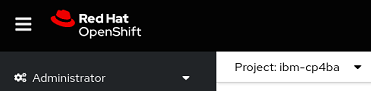
- Once the deployment has finished, you should see 40 Running and Ready pods, and about 12 or 13 Completed pods, but no Pending / CrashLoopBackOff pods.

Note: Some pods may be in Failed or Error state. For those, ensure another instance of that pod is in the Completed state. If this is the case, you can delete the Failed or Error pods. If there are pods in Failed or Error state where there is no other instance of that pod in a Completed state, the deployment is not healthy.
In different CP4BA versions, you may see more pods.
5.2.3 Post Deployment Steps - Enable log-in with the users from LDAP¶
- Get the user ID and password of the zen admin user by running those two commands:
oc get secret ibm-iam-bindinfo-platform-auth-idp-credentials -o jsonpath='{.data.admin_username}' | base64 -d && echo
oc get secret ibm-iam-bindinfo-platform-auth-idp-credentials -o jsonpath='{.data.admin_password}' | base64 -d && echo
Note: By default, the user id is cpadmin.
-
Switch to your Web Browser tab with the OCP Web Console and select Networking > Routes.
-
If not on project ibm-cp4ba, switch to it.
-
In the Location column on the cpd Route, click on the URL to open the cpd route in a new tab.
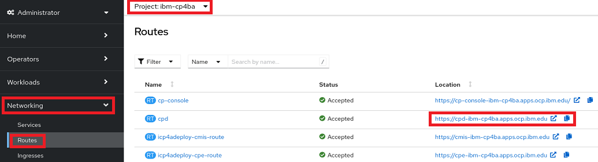
- Accept the self-signed certificate.
Note: For deploying the CP4BA Cluster, properly signed certificates can be created, which don't raise security exceptions in the Web Browser. This requires having SSL Certificates from a Certificate Authority, which would be available, for example, in an OCP environment on IBM Cloud.
-
On the Log in to IBM Cloud Pak screen, select IBM-provided credentials (cpadmin only).
-
Log in using the zen admin user credentials you gathered in Step 1.
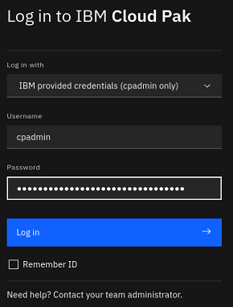
- You now see the IBM Cloud Pak Welcome page. Click Manage users.
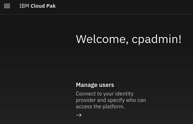
- Select tab User groups and click New user group.
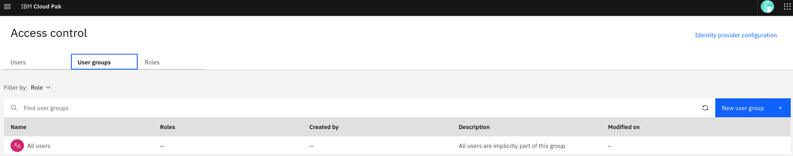
-
Enter the name cp4bausers and click Next.
-
On the Users page, select Identity provider groups, search for cp4bausers, select the result and click Next.

-
On the Roles page, select Automation Developer (needed for CP4BA, for example, to access BAStudio) and User, then click Next.
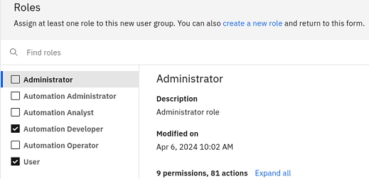
-
On the Summary page, review the selections and click Create.
-
Verify that the new group got created. Then, select the Users tab and click cp4badmin.
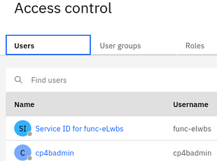
-
Click on Assign roles.
-
Select all roles and click Assign 4 roles.

-
Verify the roles where assigned successfully. Then, log out with the zen admin user.
5.2.4 Post Deployment Steps - Verify that LDAP users can log in¶
-
Click Log in.
-
As Log in with option, select this time Enterprise LDAP.
-
Log in with cp4badmin, a user from LDAP. The password is passw0rd (where the third-last character is a zero).
-
Verify that cp4badmin now has full administrative access to zen - cp4badmin should also see the Manage users option, and in the hamburger menu the entry Administration.
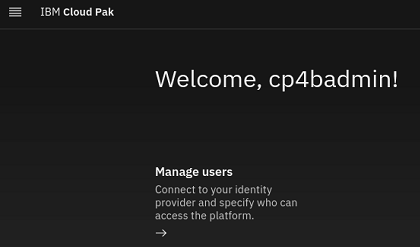 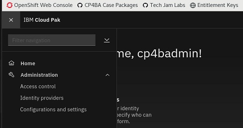
5.2.5 Post Deployment Steps - Verify that the deployed CP4BA components function correctly¶
In this chapter you will gather the cluster's URLs from config map icp4adeploy-cp4ba-access-info and test that all URLs work.
-
Switch to the Browser tab with OpenShift Web Console open.
-
Select Workloads > ConfigMaps.
-
Search for icp4adeploy-cp4ba-access-info.
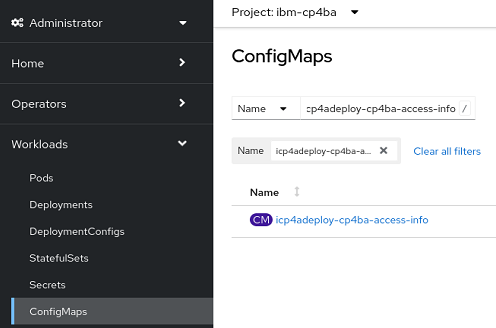
-
Click icp4adeploy-cp4ba-access-info to open this config map.
-
Scroll down to the Data > cpe-access-info section.
-
In a new Web Browser tab, open the URL for Content Platform Engine administration
Note: As you are already logged in as cp4badmin, the ACCE will show up.
- Expand Object Stores and verify CONTENT is available.

Note: As part of the deployment it's possible to initialize the CPE domain and object stores. The selected template for deployment, creates P8DOMAIN and object store CONTENT.
-
Switch back to OpenShift Web Console tab where config map icp4adeploy-cp4ba-access-info is shown.
-
Locate Business Automation Navigator for CP4BA URL in the navigator-access-info section.
-
In a new Browser tab, open Business Automation Navigator for CP4BA URL.

Note: The hamburger menu provides you access to some other navigator desktops.
-
Similarly, verify the following two URL pages open correctly.
-
Content Management Interoperability Services for CP4BA (log in with cp4badmin / passw0rd, where the third-last character is a zero)
-
Content Services GraphQL
-
5.3 Summary¶
You have completed this exercise and learned how to leverage the CP4BA rapid deployment scripts to install CP4BA on an OCP cluster.
5.3.1 About CP4BA Rapid Deployment Scripts¶
The CP4BA rapid deployment scripts (https://github.com/IBM/cp4ba-rapid-deployment) are accessible by customers, business partners, and IBMers. The IBM Automation SWAT team continuously maintains them. Feel free to use them.
At the moment, only one template is available for CP4BA version 23.0.2, the one you used while this lab. Moving forward, more templates will get added to the rapid deployment scripts that allow you to rapidly install more CP4BA patterns.
Congratulations! You have now successfully installed IBM Cloud Pak for Business Autiomation version 23.0.2 IF002 on your OpenShift cluster using the rapid deployment scripts. With that, this lab is complete.
Now that you completed all exercises of this lab, you can do the Quiz for Bring-up Lab 1 to earn the Badge for Lab 1.